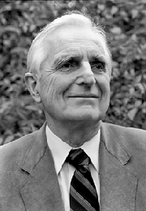

Pioneers of the Internet
Vannevar Bush

Born in 1890.
Known for idea of memex which was a human-memory enhancing machine. It allowed users to store and retrieve documents linked by associations.
This was the foundation of the World Wide Web.
The linking in this theoretical memex is very similar to the modern day Hypertext.
Douglas Englebart
Born in 1925.
Invented the Computer Mouse. Worked and demonstrated the concepts of Hypertext.
Developed the NLS (oNLine System), which was the first successful implementation of the Hypertext.
Helped develop the GUI while working at XEROX-PARC.
In 1968, at the Fall Joint Computer Conference in San Francisco, Engelbart demonstrated NLS in a 90 minute multimedia presentation that included a live video conference with staff members back in his lab 30 miles away. To this day, Engelbart's demo is still known as "the mother of all demos."
Ted Nelson
Born in 1937.
In 1963 and 1965, coined the terms "Hypertext" and "Hypermedia" respectively. His biggest project "Xanadu" was supposed to be a world-wide publishing system to create a sort of universal library.
This project still remains incomplete and was made open source in 1999.
He followed 4 maxims: "Most people are fools, most authority is malignant, God does not exist, and everything is wrong."
Steve Jobs

Born in 1955.
Co-founder of Apple Inc.
Founder of the NeXT Computer. He saw the commercial potential of XEROX-ALTO GUI and then developed the first successful computer with a user interface called the 'Macintosh'. He later help develop the signature apple products such as iPhone, iPod, iMac, iTunes, iPad.
Tim Berners-Lee
Born in 1955.
Invented the World Wide Web in 1989.
In 1990 he wrote the HyperText-Transfer Protocol (HTTP), while working at CERN.
Created the first web-site.
Founded the W3C (WWW Consortium)
Marc Andreessen
Born in 1971.
Co-author of NCSA Mosaic, the first widely used web browser.
Co-founder of the Netscape Navigator.
Developed the Secure Shell Layer for online communication as well as JavaScript for client-side scripting.
Lou Montulli

Born in 1971.
Known for his work in co-authoring a text based browser called Lynx. It is still in use today.
Founding engineer of Netscape Communications and programmed one of the first versions of the Netscape Web Browser.
Vint Cerf
Born in 1943.
Referred as the one of the "fathers of the Internet".
Developed the first commercial email system (MCI Mail).
Helped in creating the Transmission Control Protocol and Internet Protocol.
In 1992 founded the Internet Society.